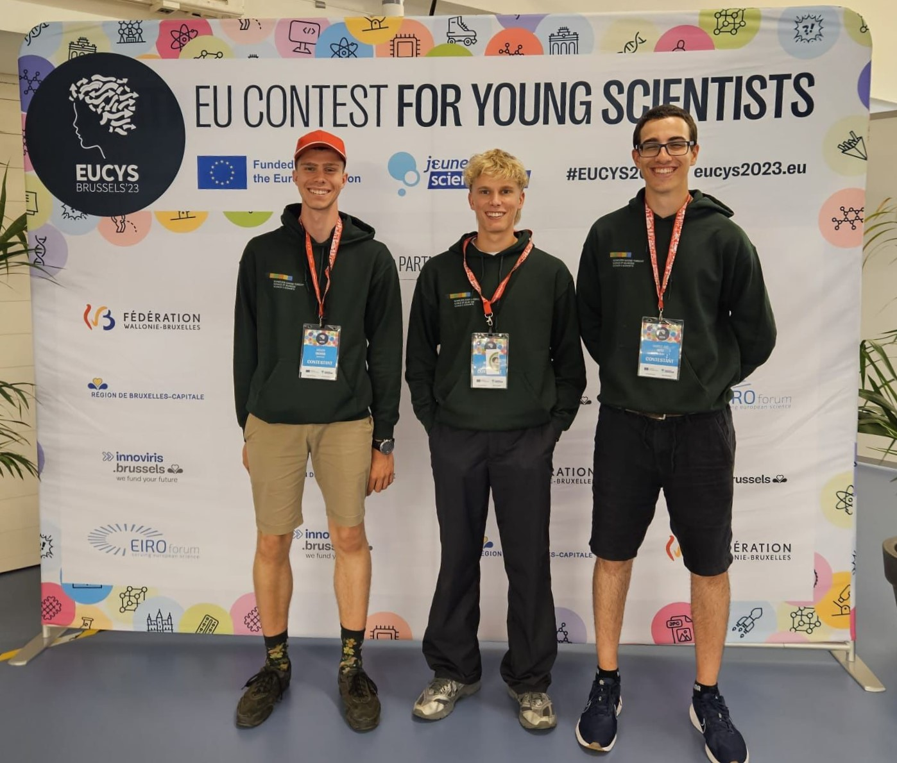
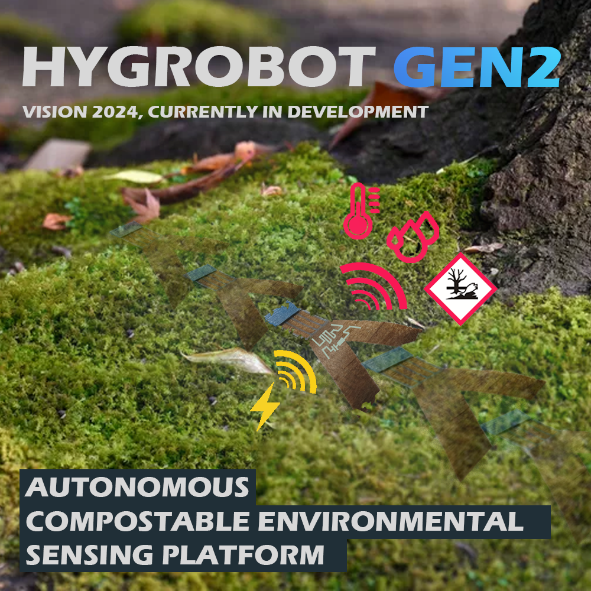

Meeting with Alain Berset, one of seven federal councillors of Switzerland (until 2023):
We had the possibility to speak to him and ask him questions. He was very
funny and highlighted the importance of science to solve our biggest
global problems.
EUCYS 2023 competition took place in the heart of Europe (Brussels).
It was an honor to be able to represent Switzerland (🍫). The exchange between
the delegations and their excellent projects was a unique experience.
The richness of creativity, curiosity and ambitions inspired me and gave me hope
for the future.


RESEARCH: Currently I'm looking for research partners. I'm particularly interested in
universities as supporters for my project. Specifically, I am trying to create
wireless, compostable sensors that can be mounted on hygrobots and give them the
ability to actively sense their environment. This could be a major milestone for
environmental sciences.
In a single seed lies the power to give birth to entire worlds. Let the seed of your dreams fall into the soil of possibilities and it will blossom to reveal the beauty of your inner landscape.


.png)

.png)